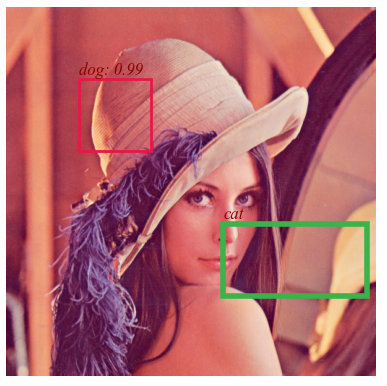
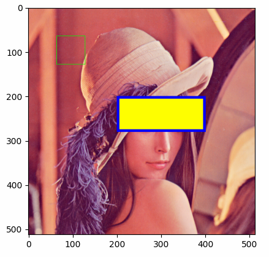
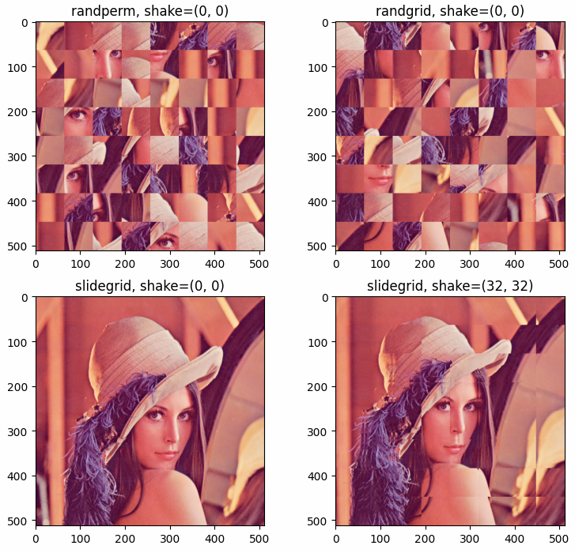

pyailib.misc package¶
Submodules¶
pyailib.misc.bounding_box module¶
- pyailib.misc.bounding_box.fmt_bbox(bboxes, fmtstr='LTRB2CHW')¶
Formats bounding boxes
Warning
The height and width are computed by \(y_{\rm max} - y_{\rm min}\) and \(x_{\rm max} - x_{\rm min}\).
- Parameters
bboxes (list or numpy array) – The bounding boxes to be converted, all bboxes have the same mode.
fmtstr (str, optional) –
'LTRB2TLBR': LeftTopRightBottom (xmin, ymin, xmax, ymax) –> TopLeftBottomRight (ymin, xmin, ymax, xmax)'TLBR2LTRB': TopLeftBottomRight (ymin, xmin, ymax, xmax) –> LeftTopRightBottom (xmin, ymin, xmax, ymax)'CWH2CHW': CenterWidthHeight (x, y, w, h) –> CenterHeightWidth (y, x, h, w)'CHW2CWH': CenterHeightWidth (y, x, h, w) –> CenterWidthHeight (x, y, w, h)'LTRB2CWH': LeftTopRightBottom (xmin, ymin, xmax, ymax) –> CenterWidthHeight (x, y, w, h)'LTRB2CHW': LeftTopRightBottom (xmin, ymin, xmax, ymax) –> CenterHeightWidth (y, x, h, w)'TLBR2CWH': TopLeftBottomRight (ymin, xmin, ymax, xmax) –> CenterWidthHeight (x, y, w, h)'TLBR2CHW': TopLeftBottomRight (ymin, xmin, ymax, xmax) –> CenterHeightWidth (y, x, h, w)'CWH2LTRB': CenterWidthHeight (x, y, w, h) –> LeftTopRightBottom (xmin, ymin, xmax, ymax)'CWH2TLBR': CenterWidthHeight (x, y, w, h) –> TopLeftBottomRight (ymin, xmin, ymax, xmax)'CHW2LTRB': CenterHeightWidth (y, x, h, w) –> LeftTopRightBottom (xmin, ymin, xmax, ymax)'CHW2TLBR': CenterHeightWidth (y, x, h, w) –> TopLeftBottomRight (ymin, xmin, ymax, xmax)'LRTB2LTRB': LeftRightTopBottom (xmin, xmax, ymin, ymax) –> LeftTopRightBottom (xmin, ymin, xmax, ymax)'LRTB2TLBR': LeftRightTopBottom (xmin, xmax, ymin, ymax) –> TopLeftBottomRight (ymin, xmin, ymax, xmax)'LTRB2LRTB': LeftTopRightBottom (xmin, ymin, xmax, ymax) –> LeftRightTopBottom (xmin, xmax, ymin, ymax)'LRTB2CWH': LeftRightTopBottom (xmin, xmax, ymin, ymax) –> CenterWidthHeight (x, y, w, h)'LRTB2CHW': LeftRightTopBottom (xmin, xmax, ymin, ymax) –> CenterHeightWidth (y, x, h, w)'CWH2LRTB': CenterWidthHeight (x, y, w, h) –> LeftRightTopBottom (xmin, xmax, ymin, ymax)'CHW2LRTB': CenterHeightWidth (y, x, h, w) –> LeftRightTopBottom (xmin, xmax, ymin, ymax)
- Returns
list or numpy array – The formated bounding boxes.
see
plot_bbox()
- pyailib.misc.bounding_box.plot_bbox(bboxes, labels=None, scores=None, edgecolors=None, linewidths=1, fontdict=None, textpos='TopCenter', offset=None, ax=None)¶
Plots bounding boxes with scores and labels
- Parameters
bboxes (list or numpy array) – The bounding boxes, in
LeftTopRightBottommode, which means (xmin, ymin, xmax, ymax)labels (list or None, optional) – The labels, can be a list of class id or class name. If None, won’t show labels.
scores (list or None, optional) – The scores, can be a list of float numbers. If None, won’t show labels.
edgecolors (None, optional) – The edgecolors for bounding boxes.
linewidths (int, optional) – The linewidths for bounding boxes.
fontdict (None, optional) – The fontdict for labels and scores.
textpos (str, optional) – The position for text (labels and scores).
offset (None, optional) – The offset for text (labels and scores).
ax (None, optional) – The
axhandle, If None, auto generated.
- Returns
ax – The
axhandlesee
fmt_bbox()
Example
Plot bounding boxes with scores and labels on an image.
The results shown in the above figure can be obtained by the following codes.
import pyailib as pl import matplotlib.pyplot as plt bboxes = [[100, 100, 200, 200], [300, 300, 400, 500]] labels = ['dog', 'cat'] scores = [0.987, None] edgecolors = [list(pl.DISTINCT_COLORS_RGB_NORM.values())[0], None] edgecolors = list(pl.DISTINCT_COLORS_RGB_NORM.values())[0:2] linewidths = [2, 4] fontdict = {'family': 'Times New Roman', 'style': 'italic', 'weight': 'normal', 'color': 'darkred', 'size': 12, } x = pl.imread('../../data/images/LenaRGB512.tif') fig = plt.figure() ax = fig.add_subplot(1, 1, 1) ax.imshow(x) pl.plot_bbox(bboxes, labels=labels, scores=scores, edgecolors=edgecolors, linewidths=linewidths, fontdict=fontdict, textpos='TopLeft', ax=ax) plt.axis('off') plt.savefig('./bbbox.png', bbox_inches='tight', pad_inches=0) plt.show()
{kind=link}
pyailib.misc.draw_shapes module¶
- pyailib.misc.draw_shapes.draw_eclipse(x, centroids, aradii, bradii, edgecolors=[255, 0, 0], linewidths=1, fillcolors=None, axes=(- 2, - 1))¶
- pyailib.misc.draw_shapes.draw_rectangle(x, rects, edgecolors=[[255, 0, 0]], linewidths=[1], fillcolors=[None], axes=(- 3, - 2))¶
Draw rectangles in a tensor
- Parameters
x (numpy array) – The input with any size.
rects (list or tuple) – The coordinates of the rectangles [[lefttop, rightbottom]].
edgecolors (list, optional) – The color of edge.
linewidths (int, optional) – The linewidths of edge.
fillcolors (int, optional) – The color for filling.
axes (int, optional) – The axes for drawing the rect (default [(-3, -2)]).
- Returns
x (numpy array) – Output image array with rectangle shapes.
see
fmt_bbox()
Example
Draw rectangles in an figure, and return the result image array.
The results shown in the above figure can be obtained by the following codes.
import pyailib as pl import matplotlib.pyplot as plt print(pl.__version__) x = pl.imread('../../data/images/LenaRGB512.tif') print(x.shape) # rects, edgecolors, fillcolors, linewidths = [[0, 0, 511, 511]], [None], [[0, 255, 0]], [1] # rects, edgecolors, fillcolors, linewidths = [[0, 0, 511, 511]], [[255, 0, 0]], [None], [1] # rects, edgecolors, fillcolors, linewidths = [[0, 0, 511, 511]], [[255, 0, 0]], [[0, 255, 0]], [1] rects, edgecolors, fillcolors, linewidths = [[64, 64, 128, 128], [200, 200, 280, 400]], [[0, 255, 0], [0, 0, 255]], [None, [255, 255, 0]], [1, 6] y = pl.draw_rectangle(x, rects, edgecolors=edgecolors, linewidths=linewidths, fillcolors=fillcolors, axes=[(0, 1)]) pl.imsave('out.png', y) plt.figure() plt.imshow(y) plt.show()
{kind=link}
pyailib.misc.mapping_operation module¶
- pyailib.misc.mapping_operation.mapping(X, drange=(0.0, 255.0), mode='amplitude', method='2Sigma', odtype='auto')¶
convert to image
Convert data to image data \(\bm X\) with dynamic range \(d=[min, max]\).
- Parameters
X (numpy array) – data to be converted
drange (tuple, optional) – dynamic range (the default is (0., 255.))
mode (str, optional) – data mode in
X,'amplitude'(default) or'power'.method (str, optional) – converting method, surpported values are
'1Sigma','2Sigma','3Sigma'(the default is ‘2Sigma’, which means two-sigma mapping)odtype (str, None..., optional) – output data type, supportted are
'auto'(auto infer, default), or numpy.ndarray’s dtype string. If the type ofodtypeis not string, the output data type is'th.float32'.
- Returns
Y – converted image data
- Return type
numpy array
pyailib.misc.sampling module¶
- pyailib.misc.sampling.dnsampling(x, ratio=1.0, axis=- 1, smode='uniform', omode='discard', seed=None, extra=False)¶
down-sampling a tensor
- Parameters
x (ndarray) – The input tensor.
ratio (float, optional) – Downsampling ratio.
axis (int, optional) – Downsampling axis (default -1).
smode (str, optional) – Downsampling mode:
'uniform','random','random2'.omode (str, optional) – output mode:
'discard'for discarding,'zero'for zero filling.extra (bool, optional) – If
True, also return sampling mask.
- Returns
Description
- Return type
(ndarray)
- Raises
TypeError –
axisValueError –
ratio, attr:smode, attr:omode
- pyailib.misc.sampling.patch2tensor(p, size=(256, 256), axis=(1, 2), mode='nfirst')¶
merge patch to a tensor
- Parameters
p (tensor) – A tensor of patches.
size (tuple, optional) – Merged tensor size in the dimension (the default is (256, 256)).
axis (tuple, optional) – Merged axis of patch (the default is (1, 2))
mode (str, optional) – Patch mode
'nfirst'or'nlast'(the default is ‘nfirst’, which means the first dimension is the number of patches)
- Returns
Merged tensor.
- Return type
ndarray
see
tensor2patch().
- pyailib.misc.sampling.read_samples(datafiles, keys=[['SI', 'ca', 'cr']], nsamples=[10], groups=[1], mode='sequentially', axis=0, parts=None, seed=None)¶
Read samples
- Parameters
datafiles (list) – list of path strings
keys (list, optional) – data keys to be read
nsamples (list, optional) – number of samples for each data file
groups (list, optional) – number of groups in each data file
mode (str, optional) – sampling mode for all datafiles
axis (int, optional) – sampling axis for all datafiles
parts (None, optional) – number of parts (split samples into some parts)
seed (None, optional) – the seed for random stream
- Returns
samples
- Return type
tensor
- Raises
ValueError –
nsamplesshould be large enough
- pyailib.misc.sampling.sample_tensor(x, n, axis=0, groups=1, mode='sequentially', seed=None, extra=False)¶
sample a tensor
Sample a tensor sequentially/uniformly/randomly.
- Parameters
x (ndarray) – a numpy or torch tensor to be sampled
n (int) – sample number
axis (int, optional) – the axis to be sampled (the default is 0)
groups (int, optional) – number of groups in this tensor (the default is 1)
mode (str, optional) –
'sequentially': evenly spaced (default)'uniformly': [0, int(n/groups)]'randomly': randomly selected, non-returned sampling
seed (None or int, optional) – only work for
'randomly'mode (the default is None)extra (bool, optional) – If
True, also return the selected indexes, the default isFalse.
- Returns
Sampled numpy or torch tensor. idx (list): Sampled indexes, if
extraisTrue, this will also be returned.- Return type
y (ndarray)
Example
setseed(2020, 'numpy') x = np.randint(1000, (20, 3, 4)) y1, idx1 = sample_tensor(x, 10, axis=0, groups=2, mode='sequentially', extra=True) y2, idx2 = sample_tensor(x, 10, axis=0, groups=2, mode='uniformly', extra=True) y3, idx3 = sample_tensor(x, 10, axis=0, groups=2, mode='randomly', extra=True) print(x.shape) print(y1.shape) print(y2.shape) print(y3.shape) print(idx1) print(idx2) print(idx3) the outputs are as follows: torch.Size([20, 3, 4]) torch.Size([10, 3, 4]) torch.Size([10, 3, 4]) torch.Size([10, 3, 4]) [0, 1, 2, 3, 4, 10, 11, 12, 13, 14] [0, 2, 4, 6, 8, 10, 12, 14, 16, 18] [3, 1, 5, 8, 7, 17, 18, 13, 16, 10]
- Raises
ValueError – The tensor does not has enough samples.
- pyailib.misc.sampling.shuffle_tensor(x, axis=0, groups=1, mode='inter', seed=None, extra=False)¶
shuffle a tensor
Shuffle a tensor randomly.
- Parameters
x (ndarray) – A numpy or torch tensor to be shuffled.
axis (int, optional) – The axis to be shuffled (default 0)
groups (number, optional) – The number of groups in this tensor (default 1)
mode (str, optional) –
'inter': between groups (default)'intra': within group'whole': the whole
seed (None or number, optional) – random seed (the default is None)
extra (bool, optional) – If
True, also returns the shuffle indexes, the default isFalse.
- Returns
Shuffled numpy or torch tensor. idx (list): Shuffled indexes, if
extraisTrue, this will also be returned.- Return type
y (ndarray)
Example
Shuffle a tensor randomly with different modes (
'intra','inter','whole').setseed(2020, 'numpy') x = np.randint(1000, (20, 3, 4)) y1, idx1 = shuffle_tensor(x, axis=0, groups=4, mode='intra', extra=True) y2, idx2 = shuffle_tensor(x, axis=0, groups=4, mode='inter', extra=True) y3, idx3 = shuffle_tensor(x, axis=0, groups=4, mode='whole', extra=True) print(x.shape) print(y1.shape) print(y2.shape) print(y3.shape) print(idx1) print(idx2) print(idx3) the outputs are as follows: torch.Size([20, 3, 4]) torch.Size([20, 3, 4]) torch.Size([20, 3, 4]) torch.Size([20, 3, 4]) [1, 0, 3, 4, 2, 8, 6, 5, 9, 7, 13, 11, 12, 14, 10, 18, 15, 17, 16, 19] [0, 1, 2, 3, 4, 10, 11, 12, 13, 14, 5, 6, 7, 8, 9, 15, 16, 17, 18, 19] [1, 13, 12, 5, 19, 9, 11, 6, 4, 16, 17, 3, 8, 18, 7, 10, 15, 0, 14, 2]
- pyailib.misc.sampling.slidegrid(start, stop, step, shake=0, n=None)¶
generates sliding grid indexes
Generates
nsliding grid indexes fromstarttostopwith step sizestep.- Parameters
- Returns
for multi-dimension, return a 2-d tensor, for 1-dimension, return a 1d-tensor.
- Raises
TypeError – The number of samples should be an integer or None.
see
randperm(),randgrid().
- pyailib.misc.sampling.split_tensor(x, ratios=[0.7, 0.2, 0.1], axis=0, shuffle=False, seed=None, extra=False)¶
split a tensor
split a tensor into some parts.
- Parameters
x (ndarray) – A numpy array or torch tensor.
ratios (list, optional) – Split ratios (the default is [0.7, 0.2, 0.05])
axis (int, optional) – Split axis (the default is 0)
shuffle (bool, optional) – Whether shuffle (the default is False)
seed (int, optional) – Shuffule seed (the default is None)
extra (bool, optional) – If
True, also return the split indexes, the default isFalse.
- Returns
Splitted ndarrays.
- Return type
(list of ndarray)
- pyailib.misc.sampling.tensor2patch(x, n=None, size=(256, 256), axis=(0, 1), start=(0, 0), stop=(None, None), step=(1, 1), shake=(0, 0), mode='slidegrid', seed=None)¶
sample patch from a tensor
Sample some patches from a tensor, tensor and patch can be any size.
- Parameters
x (ndarray) – A tensor to be sampled.
n (int, optional) – The number of pactches, the default is None, auto computed, equals to the number of blocks with specified
stepsize (tuple or int, optional) – The size of patch (the default is (256, 256))
axis (tuple or int, optional) – The sampling axis (the default is (0, 1))
start (tuple or int, optional) – Start sampling index for each axis (the default is (0, 0))
stop (tuple or int, optional) – Stopp sampling index for each axis. (the default is (None, None), which [default_description])
step (tuple or int, optional) – Sampling stepsize for each axis (the default is (1, 1), which [default_description])
shake (tuple or int or float, optional) – float for shake rate, int for shake points (the default is (0, 0), which means no shake)
mode (str, optional) – Sampling mode,
'slidegrid','randgrid','randperm'(the default is ‘slidegrid’)seed (int, optional) – Random seed. (the default is None, which means no seed.)
- Returns
A tensor of sampled patches.
- Return type
(ndarray)
see
patch2tensor().Example
Sample patches from a tensor with different mode (randperm, randgrid, slidegrid), and then reform these patches into an image.
- Scale
100 %
- Align
center
The results shown in the above figure can be obtained by the following codes.
import math import numpy as np import pyailib as pl import matplotlib.pyplot as plt filename = '../../data/images/Lotus512.png' filename = '../../data/images/LenaRGB512.tif' x = pl.imread(filename) xshape = x.shape xshape = xshape[:2] n, size = 64, (64, 64) y1 = pl.tensor2patch(x, n=n, size=size, axis=(0, 1), step=(1, 1), shake=(0, 0), mode='randperm', seed=2020) y2 = pl.tensor2patch(x, n=n, size=size, axis=(0, 1), step=(64, 64), shake=(0, 0), mode='randgrid', seed=2020) y3 = pl.tensor2patch(x, n=n, size=size, axis=(0, 1), step=(64, 64), shake=(0, 0), mode='slidegrid', seed=2020) y4 = pl.tensor2patch(x, n=n, size=size, axis=(0, 1), step=(64, 64), shake=(32, 32), mode='slidegrid', seed=2020) print(y1.shape, y2.shape, y3.shape, y4.shape) Y1 = pl.patch2tensor(y1, size=xshape, axis=(1, 2), mode='nfirst') Y2 = pl.patch2tensor(y2, size=xshape, axis=(1, 2), mode='nfirst') Y3 = pl.patch2tensor(y3, size=xshape, axis=(1, 2), mode='nfirst') Y4 = pl.patch2tensor(y4, size=xshape, axis=(1, 2), mode='nfirst') plt.figure() plt.subplot(221) plt.imshow(Y1) plt.title('randperm, shake=(0, 0)') plt.subplot(222) plt.imshow(Y2) plt.title('randgrid, shake=(0, 0)') plt.subplot(223) plt.imshow(Y3) plt.title('slidegrid, shake=(0, 0)') plt.subplot(224) plt.imshow(Y4) plt.title('slidegrid, shake=(32, 32)') plt.show()
- pyailib.misc.sampling.upsampling(X, shape, axis=- 1, method='Lanczos')¶
pyailib.misc.transform module¶
- pyailib.misc.transform.ct2rt(x, axis=0)¶
Converts a complex-valued tensor to a real-valued tensor
Converts a complex-valued tensor \({\bf x}\) to a real-valued tensor with FFT and conjugate symmetry.
- Parameters
x (Tensor) – The input tensor \({\bf x}\in {\mathbb C}^{H×W}\).
axis (int) – The axis for excuting FFT.
- Returns
The output tensor \({\bf y}\in {\mathbb R}^{2H×W}\) (
axis= 0 ), \({\bf y}\in {\mathbb R}^{H×2W}\) (axis= 1 )- Return type
Tensor
- pyailib.misc.transform.db20(x)¶
- pyailib.misc.transform.quantization(X, idrange=None, odrange=[0, 31], odtype='auto', extra=False)¶
Quantize data.
\[{\bm X} \in [a, b] \rightarrow y \in [c, d] \]\[{\bm Y} = \lfloor (d-c) (X-a) / (b-a) + c \rfloor. \]- Parameters
X (ndarray) – The data to be quantized with shape \({\bm X} \in {\mathbb R}^{N_a×N_r}\), or \({\bm X} \in {\mathbb C}^{N_a×N_r}\).
idrange (tuple, list, optional) – Specifies the range of data. Default \([{\rm min}(X), {\rm max}(X)]\).
odrange (tuple, list, optional) – Specifies the range of data after beening quantized. Default [0, 31].
odtype (str or None, optional) – output data type, supportted are
'auto'(auto infer, default), or numpy ndarray’s dtype string. If the type ofodtypeis not string(such as None), the type of output data is the same with input.extra (bool) – If
True, also returnidrangeandodrange.
- Returns
Quantized data ndarray, if the input is complex, will return a ndarray with shape \({\bm Y} \in {\mathbb R}^{N_a×N_r×2}\). idrange, odrange (list or tuple): If
extrais true, also be returned- Return type
(ndarray)
- Raises
Exception –
idrangeandodrangeshould be (tulpe) or (list)
- pyailib.misc.transform.rt2ct(y, axis=0)¶
Converts a real-valued tensor to a complex-valued tensor
Converts a real-valued tensor \({\bf y}\) to a complex-valued tensor with FFT and conjugate symmetry.
- Parameters
y (Tensor) – The input tensor \({\bf y}\in {\mathbb C}^{2H×W}\).
axis (int) – The axis for excuting FFT.
- Returns
The output tensor \({\bf x}\in {\mathbb R}^{H×W}\) (
axis= 0 ), \({\bf x}\in {\mathbb R}^{H×W}\) (axis= 1 )- Return type
Tensor
- pyailib.misc.transform.scale(X, st=[0, 1], sf=None, istrunc=True, extra=False)¶
Scale data.
\[x \in [a, b] \rightarrow y \in [c, d] \]\[y = (d-c)*(x-a) / (b-a) + c. \]- Parameters
X (ndarray) – The data to be scaled.
st (tuple, list, optional) – Specifies the range of data after beening scaled. Default [0, 1].
sf (tuple, list, optional) – Specifies the range of data. Default [min(X), max(X)].
istrunc (bool) – Specifies wether to truncate the data to [a, b], For example, If sf == [a, b] and ‘istrunc’ is true, then X[X < a] == a and X[X > b] == b.
extra (bool) – If
True, also returnstandsf.
- Returns
Scaled data ndarray. st, sf (list or tuple): If
extrais true, also be returned- Return type
out (ndarray)
- Raises
Exception – Description
- pyailib.misc.transform.standardization(X, mean=None, std=None, axis=None, extra=False)¶
- \[\bar{X} = \frac{X-\mu}{\sigma} \]
- Parameters
X (ndarray) – data to be normalized,
mean (list or None, optional) – mean value (the default is None, which means auto computed)
std (list or None, optional) – standard deviation (the default is None, which means auto computed)
axis (list or int, optional) – specify the axis for computing mean and standard deviation (the default is None, which means all elements)
extra (bool, optional) – if True, also return the mean and std (the default is False, which means just return the standardized data)
- Returns
Standardized/Normalized ndarray.
- Return type
(ndarray)